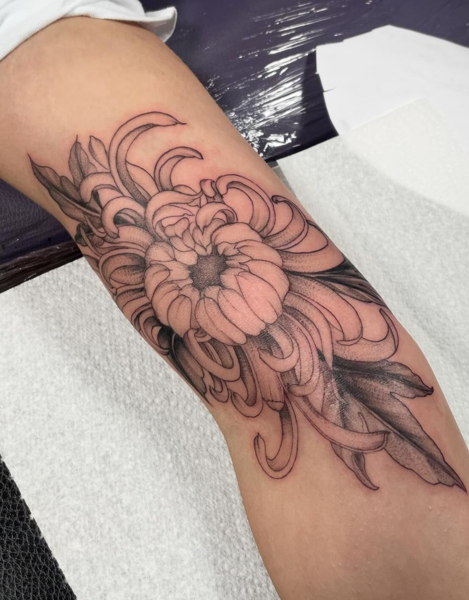
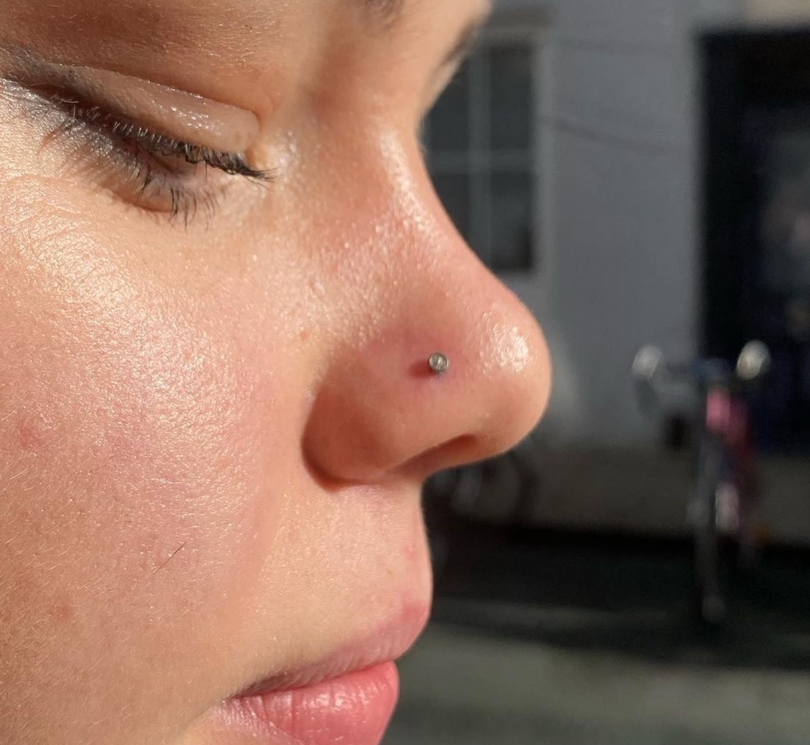

Unleash your creativity with our expert tattoo artists.
Our Artists
Step into Brighton Ink Tattoo and meet our skilled tattoo artists, each bringing their unique style and creativity. Whether you're looking for something traditional, modern, or entirely bespoke, our artists will transform your ideas into stunning ink.
Gallery: Bryan Deniro
Gallery: Francesca Zoffoli

Body Piercing
Looking to add some sparkle to your style? Our professional piercing services at Brighton Ink Tattoo offer a wide variety of options to suit your taste. Whether it’s a simple lobe piercing or something more adventurous, our team ensures the highest standards of hygiene and precision.

Quality Jewelry: We use only the finest materials to ensure your new piercing is both stylish and safe.
Expert Care: Our experienced piercers guide you through the process, making it comfortable and safe.
Aftercare Support: Receive detailed aftercare instructions to keep your piercing looking perfect.
Unique Styles: From classic to contemporary, choose from a range of styles to express yourself.
Custom Options: Have a special request? We’re here to make your piercing vision come to life.
Ready to make a statement? Visit us at Brighton Ink Tattoo and let's create a stunning new look together!
Tattoo & Piercing Aftercare
Tattoo Aftercare - Brighton Ink
Proper aftercare is crucial to ensure your tattoo heals beautifully and maintains its vibrancy. Here's our guide:
For Cling Film Dressing:
Leave cling film on for 3-4 hours. Gently wash with warm soapy water, then pat dry with a clean towel.
Re-wrap with fresh cling film overnight.
Next day, remove the cling film and give the tattoo a good wash to remove excess ink/plasma.
For Second Skin Dressing:
Leave dressing in place for 3-5 days as directed by your artist.
Expect some smudging under the dressing - this is normal. Leave the dressing in place if secure.
If you experience irritation or rash, remove the dressing immediately and wash the area.
During Healing:
Wash the tattoo daily and dry with a clean towel.
Apply a thin layer of Palmer's Cocoa Butter 2-3 times a day for 2 weeks.
Avoid picking scabs, soaking in water, and exposure to UV rays for 4-6 weeks.
Use high-factor sunblock once healed to keep the tattoo fresh.
Piercing Aftercare
Taking proper care of your new piercing helps prevent infections and ensures a smooth healing process. Follow these tips:
Minimising Infection Risk:
Avoid unnecessary touching to reduce exposure to germs.
Wash and dry hands thoroughly before touching the piercing.
If a dressing is applied, remove it after about an hour and follow care instructions.
Cleaning Your Piercing:
Use a sterile saline solution or fragrance-free antimicrobial soap.
Clean twice daily, using cotton buds to ensure no fibers are left in the piercing.
For oral piercings, use mild, alcohol-free mouthwash. Avoid dairy products for a week.
To reduce polyps, apply a paste of aspirin and water to the area for an hour daily.
Avoid:
Alcohol and recreational drugs as they may slow healing.
Smoking, which can delay the healing process.
Touching the piercing unnecessarily and using lotions or make-up around it.
Book Your Tattoo Now!
Ready for your next tattoo? Click the photo below to fill out our booking form and schedule your appointment with one of our talented artists.
Our Studio
At Brighton Ink Tattoo, we strive to create not just exceptional tattoos but also an exceptional experience. Our studio is designed to make you feel comfortable and inspired, with a warm and welcoming atmosphere that reflects the vibrant spirit of Brighton.
From the moment you walk in, you’ll be greeted by our friendly team ready to assist you in making your tattoo vision a reality. Our space is a blend of modern aesthetics and artistic charm, providing the perfect backdrop for creativity to flourish. Whether you’re getting your first tattoo or adding to your collection, our studio is your home for all things ink.
More Information
Want to learn more about Brighton Ink Tattoo? Discover our story, our commitment to quality, and how we can bring your tattoo dreams to life. Visit us and experience the difference.